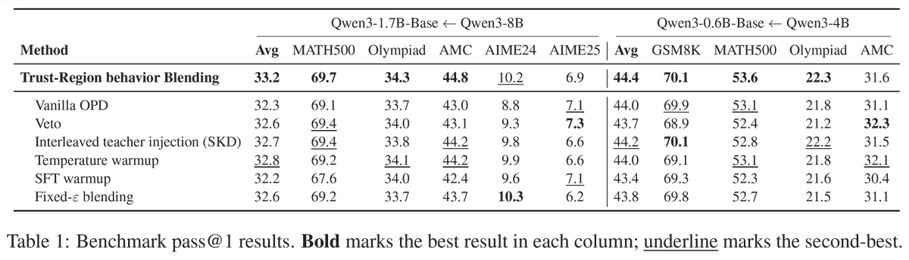
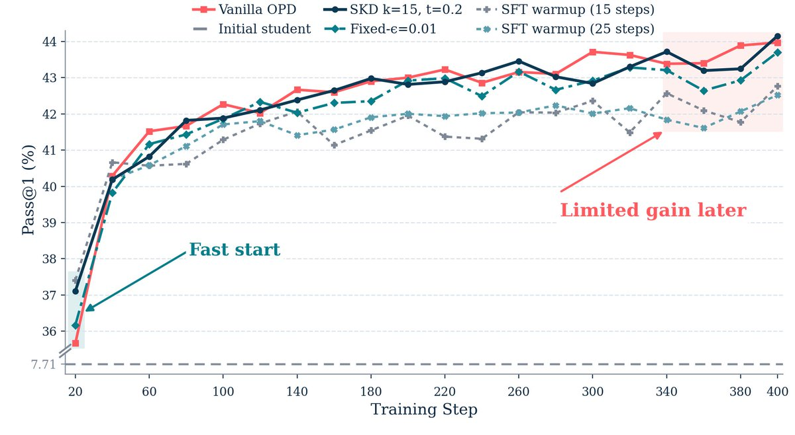
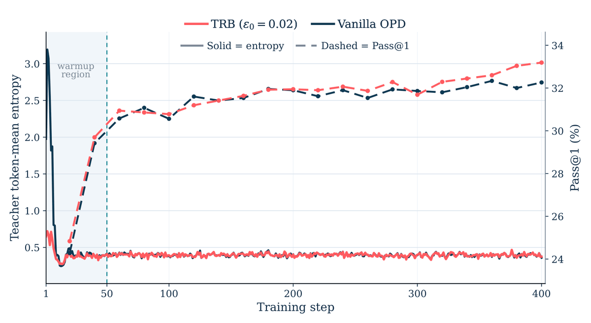

核心判断
TRB 的核心贡献是把 teacher guidance 从一个二选一问题变成一个可控预算问题：不是完全用 student rollout，也不是完全用 teacher rollout，而是在离当前 student 不超过局部 KL 预算的范围内，选一个尽量接近 teacher 的 behavior policy。
这个设计很克制。论文不改变 per-prefix reverse-KL OPD loss，不做 teacher forcing，不替换 token，不长期保持 teacher 混合；它只在 warmup 阶段改变采样策略，并把 KL 预算线性退火到 0。换句话说，TRB 是给 OPD 加了一个“受约束的起步辅助”，不是把 OPD 改成离线蒸馏。
最重要的 insight：OPD 的 early rollout 不是普通噪声，而是决定 teacher supervision 落在哪些状态上的训练分布问题。早期 prefix 如果已经 off-task，teacher 在那些 prefix 上再给分布，信号也可能低效。
问题背景：OPD 为什么会卡在开头
On-policy distillation 的动机是修正离线蒸馏的 prefix mismatch。传统 KD 或 teacher-generated data 会让 student 在 teacher 或数据集 prefix 上学习，但推理时 student 会访问自己的 prefix 分布；训练和推理状态不一致，容易形成 exposure bias。
OPD 让 student 自己 rollout，然后在 student 实际访问的 prefix 上匹配 teacher。这保留了 on-policy 优点，但代价是早期 student 太弱。第一批 rollout 可能格式崩坏、离题、推理状态低质，teacher supervision 被迫落在这些弱 prefix 上。
保持 on-policy，但 early prefix 质量差，teacher signal 可能被放在低价值状态上。
prefix 更干净，但训练分布不再是 student 自己会访问的分布，重新引入 off-policy 问题。
只在 warmup 期间让 behavior policy 向 teacher 靠近，并用 student-centered KL 限制偏离幅度。
所以 TRB 要处理的不是“teacher 强不强”这个粗问题，而是“早期能不能用有限 off-policy 预算买到更有学习价值的 prefix”。
机制拆解：在 student 信任域内找最像 teacher 的采样策略
设 student policy 为 \(\pi_S\)，teacher policy 为 \(\pi_T\)，TRB 在每个 prefix \(h\) 上构造一个 behavior policy \(\mu\)。它解的是下面这个局部约束优化问题：
直觉是：在不离开 student 太远的情况下，尽量向 teacher 靠近。这个问题的闭式解是 student 和 teacher 的几何混合：
\(\beta\) 控制向 teacher 移动的强度。实现上选择满足 \(D_{\mathrm{KL}}(\mu_\beta \| \pi_S) \le \varepsilon\) 的最大 \(\beta\)。论文附录证明这个 KL 随 \(\beta\) 单调不减，所以可以二分搜索。
当前 prefix、student next-token distribution、teacher next-token distribution。
behavior policy 对 student 的 KL 不超过当前预算 \(\varepsilon_k\)。
用 \(\mu_\beta\) 生成 warmup rollout prefix，而不是直接用 teacher token。
\(\varepsilon_k = \varepsilon_0(1-k/K)\)，warmup 结束后回到 pure student rollout。
这也是 TRB 和 SKD、SFT warmup、fixed-epsilon blending 的关键区别：TRB 不直接替换 token，也不先做一段离线 SFT；它只临时改变 rollout behavior，并且这个改变必须被 student-centered KL 预算约束。
实验证据：小幅但一致，不能读成压倒性突破
论文的证据集中在两个 Qwen3 math distillation setting。主表显示 TRB 在 average 上最好，但并非每个单项 benchmark 都赢，因此更准确的判断是：TRB 是一个稳定的 recipe 改进，而不是大幅能力跃迁。

| 设置 | TRB | Vanilla OPD | 相对判断 |
|---|---|---|---|
| Qwen3-1.7B-Base ← Qwen3-8B | Avg 33.2 | Avg 32.3 | 平均提升约 0.9 点；AIME25 上不是最好。 |
| Qwen3-0.6B-Base ← Qwen3-4B | Avg 44.4 | Avg 44.0 | 平均提升约 0.4 点；AMC 上 Veto 更高。 |


论文附录还给了 sweep-level 结果：两个设置中最强 TRB setting 高于最强 SKD setting，且很多 SKD 配置落在 TRB 区间下方。这支持一个更细的结论：直接 token injection 或更快 early rise 不等于更好的最终 checkpoint。
工程含义：rollout 分布本身就是后训练控制面
TRB 的启发是：很多 OPD / online KD / RLVR pipeline 的问题不一定出在 objective，而是出在 early sampling distribution。弱 student 早期访问的状态太差，reward 或 teacher distribution 再准确，也可能无法形成高质量学习轨迹。
把 teacher guidance 写成显式 KL 预算，分清 rollout policy 和 training objective，只在最需要的 early phase 使用。
TRB 不是证明“更多 teacher 参与一定更好”。fixed-epsilon blending 更弱，说明持续 off-policy guidance 可能伤害后期。
如果要在自己的后训练系统里尝试，我会把它当成一个 warmup module：保持 OPD loss 不变，对比 vanilla OPD、SFT warmup、temperature warmup、SKD 和 fixed-epsilon blending；不要只看 early curve，而要看同一 checkpoint-selection protocol 下的最终平均表现。
适用场景：student 早期 rollout 经常 off-task、格式崩或推理轨迹跑偏；teacher 明显更强；系统能承受 warmup 阶段 teacher 在线 decoding；任务有可自动验证的 correctness signal。
术语边界
On-policy distillation。student 自己生成 trajectory，再在这些 prefix 上匹配 teacher，目标是减少训练和推理时 prefix 分布不一致。
用于采样 rollout 的策略。TRB 改的是 behavior policy，不是 per-prefix distillation loss。
限制 \(\mu\) 相对 \(\pi_S\) 的偏离，避免 teacher guidance 直接把采样推到 student 不会访问的远端分布。
初始允许较多 teacher guidance，随后把 KL 预算退火到 0。这个退火是 TRB 优于 fixed-epsilon blending 的关键。
边界与风险
第一，证据域很窄。作者明确把研究限定在两个 Qwen3-Base student-teacher pair、数学推理任务和 correctness-based evaluation protocol 上；不能直接外推到代码、开放问答、agent trajectory 或主观生成任务。
第二，收益幅度不大。主表平均提升是 0.9 点和 0.4 点级别，这足以说明 recipe 有价值，但不足以支持“范式突破”。
第三，系统成本真实存在。vanilla OPD 可以先 student rollout，再 batch 计算 teacher logprobs；TRB 要在 decoding 时同时查询 student 和 teacher，并维护 teacher weights 与 KV cache。论文认为 teacher FLOP 数量级相近，但在线 decoding 的 wall-clock 和 peak memory 压力更高。
第四，TRB 依赖 teacher-student gap 的形态。如果 teacher 太远，KL trust region 可能只能轻微移动；如果 teacher 和 student 太近，收益又可能很小；如果任务没有稳定 verifier，warmup prefix 是否真的更有用也难以判断。
我的结论：TRB 是一个值得在 OPD 系统里尝试的 warmup 控制面，尤其适合 early rollout 质量明显差的数学或可验证推理任务。但它目前不是通用后训练方法论，只是把一个被忽略的启动分布问题处理得比较干净。
证据边界与资料索引
本笔记基于 X thread、arXiv 论文、Hugging Face paper 元数据、PDF 正文和线程配图交叉核验。X 页面公开访问不稳定时，线程正文以可访问的公开线程内容为准；论文与图表以 arXiv PDF 和本地化配图为主证据。回复区里有一个外部注册页链接，与 TRB 技术主线无关，未纳入核心分析。